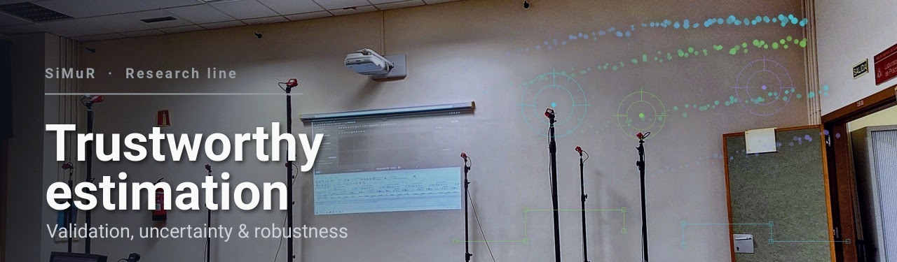

Trustworthy estimation
Making wearable motion estimates trustworthy: validation against an optical reference, calibrated per-joint uncertainty and robustness in everyday use. Each kinematic estimate becomes a signal that is verified, carries its own confidence and detects its own failures.
- Metrological validation of wearable estimates against optical motion capture as reference.
- Calibrated, per-joint uncertainty quantification (conformal and Bayesian methods).
- Detection of sensor displacement and misplacement, and drift handling, for long-term use.
- Out-of-distribution detection and reliability flags that make estimates auditable for clinical and sports decisions.
- Reproducible validation protocols; validation datasets released openly as a by-product of specific studies.